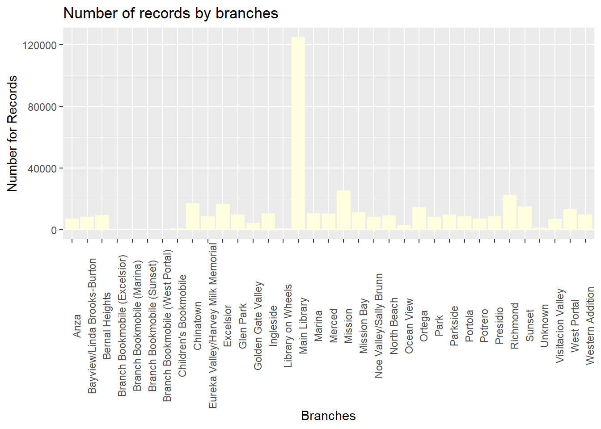
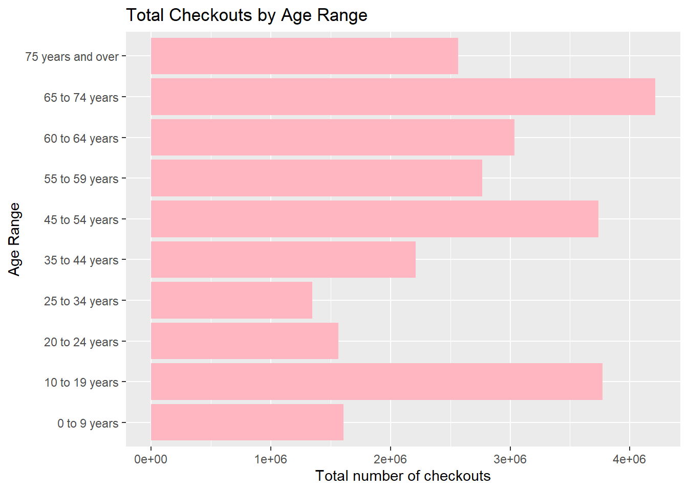
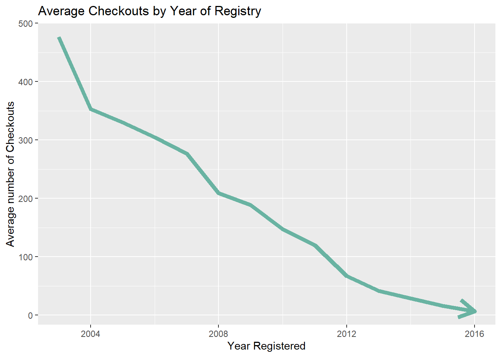
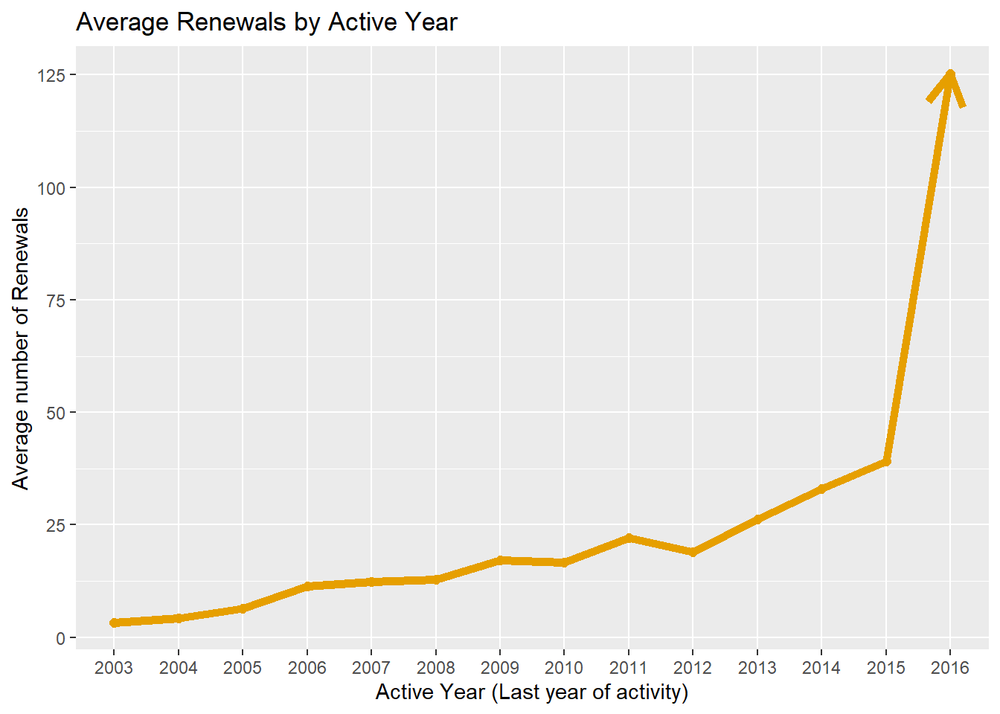
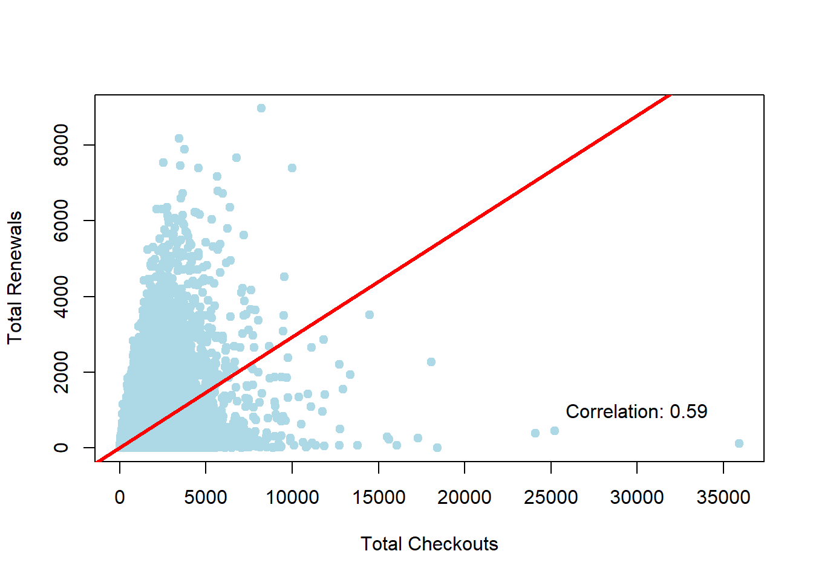
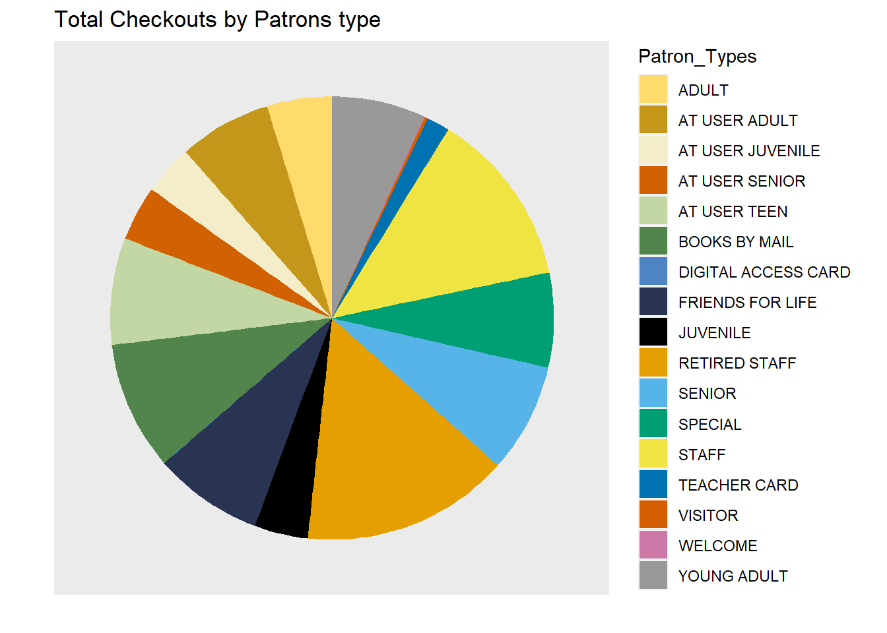
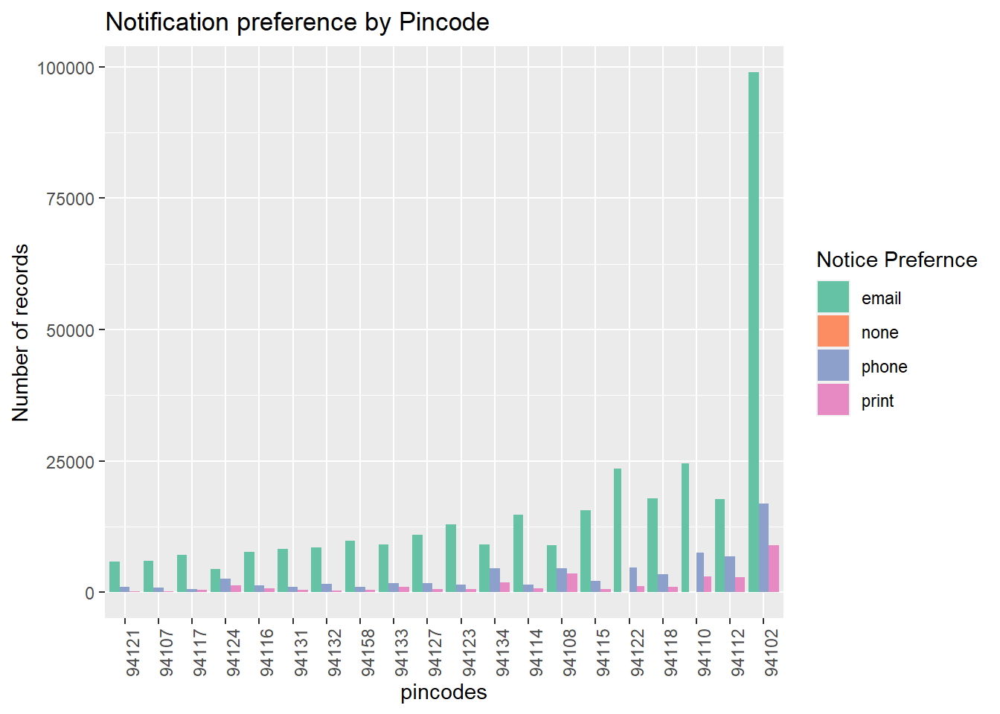
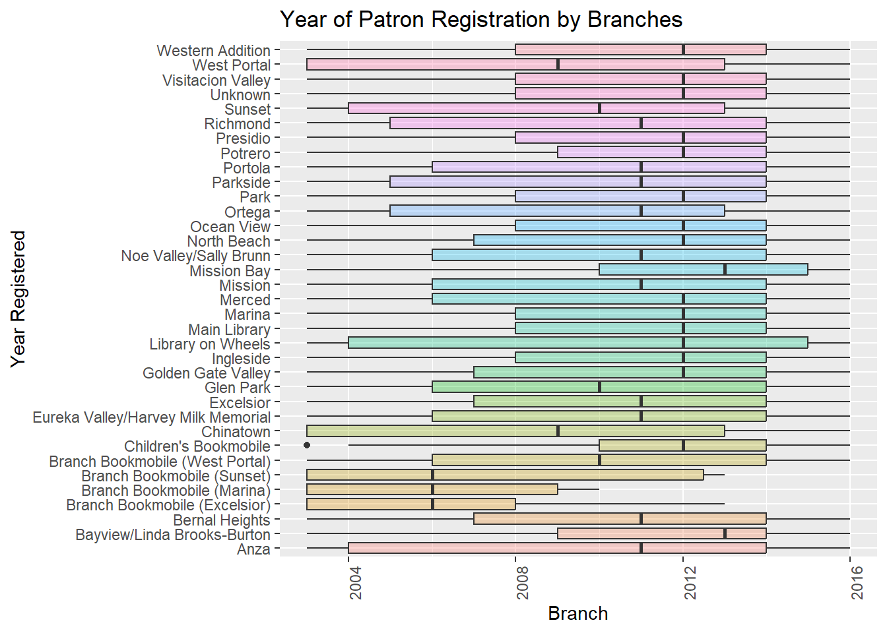
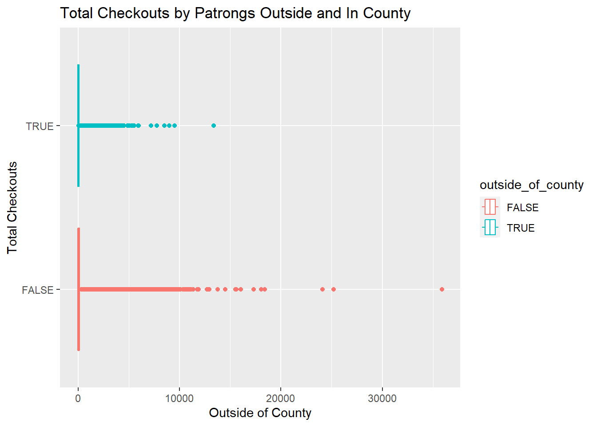
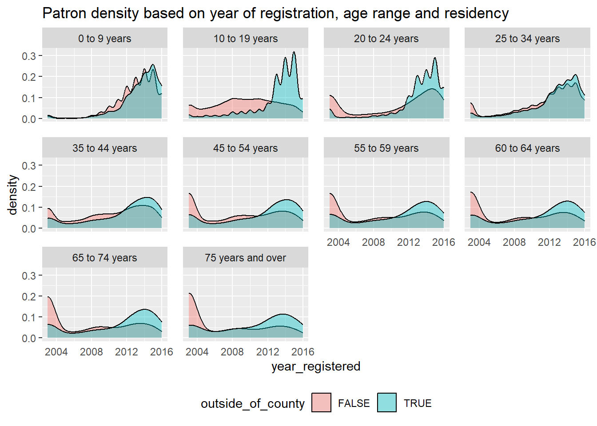

#install.packages("hrbrthemes")
#install.packages("viridis")
#install.packages('patchwork')
#install.packages('zoo')
#install.packages('directlabels')SF Library Usage Analysis
Final Project
INTRODUCTION
Prior to computerization, library tasks were performed manually and independently from one another. Selectors ordered materials with ordering slips, cataloguers manually catalogued sources and indexed them with the card catalog system (in which all bibliographic data was kept on a single index card), fines were collected by local bailiffs, and users signed books out manually, indicating their name on clue cards which were then kept at the circulation desk.
Early mechanization came in 1936, when the University of Texas began using a punch card system to manage library circulation. While the punch card system allowed for more efficient tracking of loans, library services were far from being integrated, and no other library task was affected by this change. This led to customer dissatisfaction and they wanted to move towards a very systematic way of keeping track, then came in Integrated Library systems, one example of which is my dataset for the final project.
This system is perfect for all educational institutions that wish to maintain minimum operational costs. The system helps with better management, lesser wastage of time and improves engagement and productivity. With this data, we can analyze the trends about different patrons based on their age, based on the registered year, their renewals and checkouts, and see the circulation trend.
Installing and importing necessary packages
library(tidyverse) ── Attaching packages ─────────────────────────────────────── tidyverse 1.3.2 ──
✔ ggplot2 3.4.0 ✔ purrr 0.3.5
✔ tibble 3.1.8 ✔ dplyr 1.0.10
✔ tidyr 1.2.1 ✔ stringr 1.5.0
✔ readr 2.1.3 ✔ forcats 0.5.2 Warning: package 'ggplot2' was built under R version 4.2.2Warning: package 'stringr' was built under R version 4.2.2── Conflicts ────────────────────────────────────────── tidyverse_conflicts() ──
✖ dplyr::filter() masks stats::filter()
✖ dplyr::lag() masks stats::lag()library(dplyr)
library(hrbrthemes)NOTE: Either Arial Narrow or Roboto Condensed fonts are required to use these themes.
Please use hrbrthemes::import_roboto_condensed() to install Roboto Condensed and
if Arial Narrow is not on your system, please see https://bit.ly/arialnarrowlibrary(ggplot2)
library(viridis)Loading required package: viridisLitelibrary(RColorBrewer)
library(patchwork)
library(ggbeeswarm)Warning: package 'ggbeeswarm' was built under R version 4.2.2library(zoo)
Attaching package: 'zoo'
The following objects are masked from 'package:base':
as.Date, as.Date.numericlibrary(directlabels)Warning: package 'directlabels' was built under R version 4.2.2knitr::opts_chunk$set(echo = TRUE, warning=FALSE, message=FALSE)DATA
Loading the dataset
The dataset - SF Integrated Learning System is sourced from Kaggle.com and is composed of bibliographic records including inventoried items, patron records, and circulation data. The data is used in the daily operation of the library, including circulation, online public catalog, cataloging, acquisitions, collection development, processing, and serials control. This dataset represents the usage of inventoried items by patrons (~420K records). It contains data starting from 2003 uptill 2016.
library_dataset <- read_csv("_data/Library_Usage.csv")
library_dataset# A tibble: 423,448 × 15
Patron Type…¹ Patro…² Total…³ Total…⁴ Age R…⁵ Home …⁶ Home …⁷ Circu…⁸ Circu…⁹
<dbl> <chr> <dbl> <dbl> <chr> <chr> <chr> <chr> <chr>
1 3 SENIOR 28 13 65 to … X Main L… Novemb… 2012
2 0 ADULT 21 10 55 to … X Main L… October 2015
3 0 ADULT 275 559 60 to … X Main L… January 2015
4 0 ADULT 73 38 45 to … M8 Missio… Februa… 2016
5 0 ADULT 182 90 45 to … X Main L… July 2016
6 3 SENIOR 1 0 65 to … X Main L… July 2004
7 16 DIGITA… 31 4 65 to … P7 Potrero January 2012
8 0 ADULT 547 177 60 to … X Main L… July 2016
9 0 ADULT 28 1 60 to … X Main L… Decemb… 2015
10 0 ADULT 77 3 60 to … X Main L… July 2016
# … with 423,438 more rows, 6 more variables: `Notice Preference Code` <chr>,
# `Notice Preference Definition` <chr>, `Provided Email Address` <lgl>,
# `Year Patron Registered` <dbl>, `Outside of County` <lgl>,
# `Supervisor District` <dbl>, and abbreviated variable names
# ¹`Patron Type Code`, ²`Patron Type Definition`, ³`Total Checkouts`,
# ⁴`Total Renewals`, ⁵`Age Range`, ⁶`Home Library Code`,
# ⁷`Home Library Definition`, ⁸`Circulation Active Month`, …Summary of the dataset
dim(library_dataset)[1] 423448 15The dataset contains 423448 records and 15 columns.
glimpse(library_dataset)Rows: 423,448
Columns: 15
$ `Patron Type Code` <dbl> 3, 0, 0, 0, 0, 3, 16, 0, 0, 0, 3, 3, 0,…
$ `Patron Type Definition` <chr> "SENIOR", "ADULT", "ADULT", "ADULT", "A…
$ `Total Checkouts` <dbl> 28, 21, 275, 73, 182, 1, 31, 547, 28, 7…
$ `Total Renewals` <dbl> 13, 10, 559, 38, 90, 0, 4, 177, 1, 3, 9…
$ `Age Range` <chr> "65 to 74 years", "55 to 59 years", "60…
$ `Home Library Code` <chr> "X", "X", "X", "M8", "X", "X", "P7", "X…
$ `Home Library Definition` <chr> "Main Library", "Main Library", "Main L…
$ `Circulation Active Month` <chr> "November", "October", "January", "Febr…
$ `Circulation Active Year` <chr> "2012", "2015", "2015", "2016", "2016",…
$ `Notice Preference Code` <chr> "z", "z", "z", "z", "z", "z", "z", "p",…
$ `Notice Preference Definition` <chr> "email", "email", "email", "email", "em…
$ `Provided Email Address` <lgl> TRUE, TRUE, TRUE, TRUE, TRUE, TRUE, TRU…
$ `Year Patron Registered` <dbl> 2003, 2003, 2003, 2003, 2003, 2003, 200…
$ `Outside of County` <lgl> TRUE, FALSE, TRUE, FALSE, FALSE, TRUE, …
$ `Supervisor District` <dbl> NA, NA, NA, NA, NA, NA, NA, NA, NA, NA,…The above shows the columns of the dataset along with their datatype and the initial recordings of that particular columns. The distinct data types are : dbl - double/real number values, chr - characters and lgl - for boolean values.
The columns and their description are as follows:
Patron Type Code- Type of patron record (adult, teen, child, senior, etc.)Patron Type Definition- Description of patron (adult, teen, child, senior, etc.).Total Checkouts- Total number of items the patron has checked out from the library since the record was created.Total Renewals- Total number of times the patron has renewed checked-out items.Age Range- Contains age rangesHome Library Code- Default value indicates the branch library where the patron was originally registered.Home Library Definition- Description of the branch library where the patron was originally registered.Circulation Active Month- Year the patron last checked out library materials, or last logged into the library’s subscription databases.Circulation Active Year- Month the patron last checked out library materials, or last logged into the library’s subscription databases.Notice Preference Code- This field is used to indicate the patron’s preferred method of receiving library notices.Notice Preference Definition- Description of the patron’s preferred method of receiving library notices.Provided Email Address- Indicates if the patron has provided email address or not.Year Patron Registered- Year patron registered with library system. No dates prior to 2003 due to system migration.Outside of County- If a patron’s home address is not in San Francisco, then flagged as true, otherwise false.Supervisor District- Based on patron address: San Francisco Supervisor District. Based on the website it suggested that “This is an automated field, please note that if”Outside of County” is true, then there will be no supervisor district. Also, if the input address was not well-formed, the supervisor district will be blank.”
Renaming the columns
library_dataset <- library_dataset %>%
rename( 'out_of_county' = 'Outside of County', "patron_type" = 'Patron Type Definition', "total_checkouts" = 'Total Checkouts', "total_renewals"= 'Total Renewals', 'age' = 'Age Range', 'branch' = 'Home Library Definition','active_year' = 'Circulation Active Year', 'active_month' = 'Circulation Active Month', 'notice_preference' = 'Notice Preference Definition', 'provided_email' = 'Provided Email Address', 'year_registered' = 'Year Patron Registered', "outside_of_county" = 'Outside of County')Cleaning the dataset
Selected the columns with unique characteristic for our visualizations and analysis. Some columns contain the code for the definition example : Home Library Code is the subsequent code for the Home Library Definition.
library_data <- library_dataset%>%
select(patron_type,total_checkouts,total_renewals,age,branch,active_month,active_year,notice_preference,provided_email,year_registered,outside_of_county)
library_data# A tibble: 423,448 × 11
patron…¹ total…² total…³ age branch activ…⁴ activ…⁵ notic…⁶ provi…⁷ year_…⁸
<chr> <dbl> <dbl> <chr> <chr> <chr> <chr> <chr> <lgl> <dbl>
1 SENIOR 28 13 65 t… Main … Novemb… 2012 email TRUE 2003
2 ADULT 21 10 55 t… Main … October 2015 email TRUE 2003
3 ADULT 275 559 60 t… Main … January 2015 email TRUE 2003
4 ADULT 73 38 45 t… Missi… Februa… 2016 email TRUE 2003
5 ADULT 182 90 45 t… Main … July 2016 email TRUE 2003
6 SENIOR 1 0 65 t… Main … July 2004 email TRUE 2003
7 DIGITAL… 31 4 65 t… Potre… January 2012 email TRUE 2003
8 ADULT 547 177 60 t… Main … July 2016 phone FALSE 2003
9 ADULT 28 1 60 t… Main … Decemb… 2015 email TRUE 2003
10 ADULT 77 3 60 t… Main … July 2016 email TRUE 2003
# … with 423,438 more rows, 1 more variable: outside_of_county <lgl>, and
# abbreviated variable names ¹patron_type, ²total_checkouts, ³total_renewals,
# ⁴active_month, ⁵active_year, ⁶notice_preference, ⁷provided_email,
# ⁸year_registeredlibrary_data$y_m <- paste(library_data$active_year,library_data$active_month)Loading the branch information
The dataset mentions the names of different branches of SF Public Library along with their code, but it does not give us any more information about these branches. I extracted some data about the branches from the public library website : https://sfpl.org/locations/#!/filters?sort_by=weight&sort_order=ASC&page=2 and created my own dataset “branch_info” (with 30 branches and their information). I have merged it with the original dataset for better information about each branch and their corresponding patrons.
unique(library_data$branch) [1] "Main Library" "Mission Bay"
[3] "Potrero" "Sunset"
[5] "Merced" "Noe Valley/Sally Brunn"
[7] "Excelsior" "Chinatown"
[9] "Richmond" "North Beach"
[11] "Presidio" "Mission"
[13] "Park" "Marina"
[15] "Parkside" "Eureka Valley/Harvey Milk Memorial"
[17] "Anza" "West Portal"
[19] "Ingleside" "Bernal Heights"
[21] "Portola" "Ortega"
[23] "Western Addition" "Unknown"
[25] "Ocean View" "Glen Park"
[27] "Visitacion Valley" "Bayview/Linda Brooks-Burton"
[29] "Golden Gate Valley" "Library on Wheels"
[31] "Children's Bookmobile" "Branch Bookmobile (Sunset)"
[33] "Branch Bookmobile (West Portal)" "Branch Bookmobile (Excelsior)"
[35] "Branch Bookmobile (Marina)" The above shows the different branches of San Franciso Public Library.
branch_data <- read_csv('_data/branch_info.csv')
branch_data# A tibble: 29 × 4
branch phone_number address pincode
<chr> <chr> <chr> <dbl>
1 Anza (415) 355-5717 550 37th Ave. (nea… 94121
2 Bayview/Linda Brooks-Burton (415) 355-5757 5075 Third St. (at… 94124
3 Bernal Heights (415) 355-2810 500 Cortland Ave. … 94110
4 Chinatown (415) 355-2888 1135 Powell St. (n… 94108
5 Eureka Valley/Harvey Milk Memorial (415) 355-5616 1 José Sarria Cour… 94114
6 Excelsior (415) 355-2868 4400 Mission St. (… 94112
7 Glen Park (415) 355-2858 2825 Diamond St. (… 94131
8 Golden Gate Valley (415) 355-5666 1801 Green St. (at… 94123
9 Ingleside (415) 355-2898 1298 Ocean Ave. (a… 94112
10 Main Library (415) 557-4400 100 Larkin St. (at… 94102
# … with 19 more rowsJoining the branch_data dataset wih the main dataset based on branch name.
library_data <- left_join(library_data, branch_data, by=c("branch"))
library_data# A tibble: 423,448 × 15
patron…¹ total…² total…³ age branch activ…⁴ activ…⁵ notic…⁶ provi…⁷ year_…⁸
<chr> <dbl> <dbl> <chr> <chr> <chr> <chr> <chr> <lgl> <dbl>
1 SENIOR 28 13 65 t… Main … Novemb… 2012 email TRUE 2003
2 ADULT 21 10 55 t… Main … October 2015 email TRUE 2003
3 ADULT 275 559 60 t… Main … January 2015 email TRUE 2003
4 ADULT 73 38 45 t… Missi… Februa… 2016 email TRUE 2003
5 ADULT 182 90 45 t… Main … July 2016 email TRUE 2003
6 SENIOR 1 0 65 t… Main … July 2004 email TRUE 2003
7 DIGITAL… 31 4 65 t… Potre… January 2012 email TRUE 2003
8 ADULT 547 177 60 t… Main … July 2016 phone FALSE 2003
9 ADULT 28 1 60 t… Main … Decemb… 2015 email TRUE 2003
10 ADULT 77 3 60 t… Main … July 2016 email TRUE 2003
# … with 423,438 more rows, 5 more variables: outside_of_county <lgl>,
# y_m <chr>, phone_number <chr>, address <chr>, pincode <dbl>, and
# abbreviated variable names ¹patron_type, ²total_checkouts, ³total_renewals,
# ⁴active_month, ⁵active_year, ⁶notice_preference, ⁷provided_email,
# ⁸year_registeredData Exploration
Now, we will look at the different groups present within the dataset based on the categories/columns.
library_data%>%
filter(age!='NA')%>%
ggplot(aes(x = age)) +
theme(axis.text.x = element_text(angle = 90))+
geom_bar(stat = "count",fill='lightblue') +
labs(title = "Number of records by Age Range",
x = "Age Range",
y = "Number for Records")
The above plot shows the distribution of records based on age range. We can observe that maximum records in the library system lies for the range of 25 to 34 years followed by 35 to 44 years.
ggplot(data = library_data, aes(x = patron_type)) +
theme(axis.text.x = element_text(angle = 90))+
geom_bar(stat = "count",fill='lightpink') +
labs(title = "Number of records by Patron type",
x = "Patron Type",
y = "Number for Records")
The most prominent types of patrons registered in SF Library system are : Adults, Juvenile, Senior, Welcome (guest) and Young Adults.
ggplot(data = library_data, aes(x = branch)) +
theme(axis.text.x = element_text(angle = 90))+
geom_bar(stat = "count",fill='lightyellow') +
labs(title = "Number of records by branches",
x = "Branches",
y = "Number for Records")
The maximum patrons where registered at the MAIN Library, which makes sense, as the main branch generally has most books and is most accessible to the people.
Data Statistics
The two main continuous columns of this dataset are : Total Renewals and Total Checkouts made by the patrons. The statistics for which are present below:
summary(library_data$total_checkouts) Min. 1st Qu. Median Mean 3rd Qu. Max.
0 2 19 162 113 35907 summary(library_data$total_renewals) Min. 1st Qu. Median Mean 3rd Qu. Max.
0.00 0.00 2.00 59.66 27.00 8965.00 VISUALIZATIONS
Year of Registration by Age Range
Firstly, we will analyze the trend of “year when patrons registered” with the “Age Range”.
library_data%>%
filter(age!='NA')%>%
ggplot( aes(x=year_registered, group=age, fill=age)) +
geom_density(adjust=1.5, alpha=.4) +
labs(title = "Year of Registration by Age Range",
x = "Year of Registry",
y = "Number of patrons registered")
As expected patrons with ages 60 and higher have been registered since 2003. We can see that the young children from the age of 0-9 years have started registering since 2012, which shows they are curious readers or their parents would’ve enrolled them to read books and gain information.
Total Checkouts and Renewals by Age Range
Now, we will look into the two important columns total_checkouts and total_renewals for each category of patrons and different age groups to get an idea of the circulation of the books.
library_data%>%
filter(age!='NA')%>%
ggplot(aes(x = age,y=total_checkouts)) +
geom_bar(stat = "sum",fill='lightpink') +
labs(title = "Total Checkouts by Age Range",
x = "Age Range",
y = "Total number of checkouts") +coord_flip()+theme(legend.position="none")
The majority of checkouts in the SF libraries were made by ages: 65 to 74 years followed by 45-54 years and the young readers 10-19 years.This shows us that the every generation is interested in reading books.
knitr::opts_chunk$set(echo = TRUE)
ggplot(data = library_data, aes(x = age,y=total_renewals)) +
geom_bar(stat = "sum",fill='lightblue') +
labs(title = "Total Renewals by Age Range",
x = "Age Range",
y = "Total number of Renewals") +coord_flip()+theme(legend.position="none")
The majority of renewals on the other hand were made by 45-54 years followed by 65-74 years. We can observe using the above two trends that 45-54 and 65-74 years age gaps show maximum engagement and have issued and renewed majority of books as compared to others.
Total Checkouts and Renewals by Patron Types
library_data %>%
ggplot(aes(x=patron_type, y=total_checkouts)) + geom_boxplot(alpha = 0) +
geom_jitter(alpha = 0.3, color = "tomato")+
theme(axis.text.x = element_text(angle = 90))+
labs(title = "Total Checkouts by Patron type",
x = "Patron type",
y = "Total number of Checkouts")
The majority of checkouts were made by ADULTS and SENIORS as compared to other types of patrons, which validates our theory above.
library_data %>%
ggplot(aes(x=patron_type, y=total_renewals)) + geom_boxplot(alpha = 0) +
geom_jitter(alpha = 0.3, color = "tomato")+
theme(axis.text.x = element_text(angle = 90))+
labs(title = "Total Renewals by Patron type",
x = "Patron type",
y = "Total number of Renewals")
The renewals here show that even though ADULTS and SENIORS had maximum renewals, there were significant renewals by YOUNG ADULTS, JUVENILE and STAFF members as well.
Checkouts and Renewals - A trend
As, seen the “Total Checkouts” and “Total Renewals” follow a similar trend, let us analyze them in with the year of registry.
filtered <- library_data %>%
group_by(year_registered) %>% # group by
summarise(check = mean(total_checkouts), rene = mean(total_renewals))
ggplot() +
geom_line(data = filtered, aes(x=year_registered, y=check),arrow = arrow(), color="#69b3a2",size=2)+
geom_point(size=2, color="#69b3a2")+
labs(title = "Average Checkouts by Year of Registry",
x = "Year Registered",
y = "Average number of Checkouts")
myarrow=arrow(angle = 15, ends = "both", type = "closed")filtered <- library_data %>%
group_by(year_registered) %>% # group by
summarise(check = mean(total_checkouts), rene = mean(total_renewals))
ggplot() +
geom_line(data = filtered, aes(x=year_registered, y=rene),arrow = arrow(), color="lightblue",size=2)+
geom_point(size=2, color="lightblue")+
labs(title = "Average Renewals by Year of Registry",
x = "Year Registered",
y = "Average number of Renewals")
myarrow=arrow(angle = 15, ends = "both", type = "closed")The values of checkouts and renewals have been declining over the years, having been at its highest in 2003 and being the lowest in value by 2016. There was a slight increase in 2007 but was not much significant. This totally makes sense, as the people who registered way before had more time, thus, more checkouts and subscriptions.
library_data %>%
filter(active_year!='None')%>%# data
group_by(active_year) %>%
summarise(y = mean(total_checkouts)) %>%
ggplot( aes(x=active_year, y=y, group=1)) +
geom_line(arrow = arrow(),color="#D55E00", size=2)+
geom_point(color="#D55E00", size=2)+
labs(title = "Average Checkouts by Active Year",
x = "Active Year (Last year of activity)",
y = "Average number of Checkouts")
myarrow=arrow(angle = 15, ends = "both", type = "closed")library_data %>%
filter(active_year!='None')%>%# data
group_by(active_year) %>% # group by
summarise(y = mean(total_renewals)) %>%
ggplot( aes(x=active_year, y=y, group=1)) +
geom_line(arrow = arrow(),color='#E69F00',size=2)+
geom_point(color='#E69F00',size=2)+
labs(title = "Average Renewals by Active Year",
x = "Active Year (Last year of activity)",
y = "Average number of Renewals")
myarrow=arrow(angle = 15, ends = "both", type = "closed")The Checkouts and renewals value is increasing significantly from year to year and the highest value was in 2016. This basically shows us the trend about how people are issuing more and more books moving forward.
As, seen Total renewals and Total Checkouts clearly follow similar trends, let us confirm their correlation using a plot.
plot(library_data$total_checkouts, library_data$total_renewals, pch = 19, col = "lightblue",xlab="Total Checkouts", ylab="Total Renewals")
# Regression line
abline(lm( library_data$total_renewals ~ library_data$total_checkouts), col = "red", lwd = 3)
# Pearson correlation
text(paste("Correlation:", round(cor(library_data$total_checkouts, library_data$total_renewals), 2)),x=30000,y=1000)
The plot suggests a strong correlation between total checkouts and total renewals with a pearson coefficient of 0.59 ~ 0.6.
Total Checkouts by Month for year 2016
As, this dataset provides information about monthly checkouts and renewals, we will look at monthly charts for last year in the records i.e. 2016, to understand what trends have been lately.
library_data %>%
filter(active_year=='2016')%>%
ggplot(aes(x = y_m, fill = total_checkouts)) +
geom_histogram( fill="#404080", alpha=0.6, stat = "count") + theme(axis.text.x = element_text(angle = 90, hjust = 1), legend.position = "none")+ labs(title="Total Checkouts by Month for year 2016", y="Total Checkouts",x="month")+coord_flip()
Trends of Age Range and Patron Type for July 2016
The histogram suggests the majority of checkouts occurred in month of July followed by June. Looking closely into July data, to understand the distribution of Total Checkouts by Age and Patron type:
filter_data <- library_data %>%
filter(y_m =='2016 July')
filter_data <- aggregate(filter_data$total_checkouts, by=list(Age_Range=filter_data$age), FUN=mean)
filter_data Age_Range x
1 0 to 9 years 300.2186
2 10 to 19 years 598.0791
3 20 to 24 years 283.6111
4 25 to 34 years 162.1240
5 35 to 44 years 347.6696
6 45 to 54 years 588.2905
7 55 to 59 years 736.5017
8 60 to 64 years 758.1687
9 65 to 74 years 755.9043
10 75 years and over 757.8021ggplot(data = filter_data, aes(x = "", y = x, fill = Age_Range)) +
geom_bar(stat = "identity") +
coord_polar("y")+
labs(title="Total Checkouts by Age Range")+
scale_fill_brewer(palette = "Paired")+
theme(axis.text = element_blank(),
axis.ticks = element_blank(),
panel.grid = element_blank())+
labs(x="", y="")
The pie chart shows the major contributions of checkouts in July 2016 were made by ages 45 years and above.
co <- c("#FFDB6D", "#C4961A", "#F4EDCA",
"#D16103", "#C3D7A4", "#52854C", "#4E84C4", "#293352","#000000", "#E69F00", "#56B4E9", "#009E73",
"#F0E442", "#0072B2", "#D55E00", "#CC79A7","#999999")
filter_data <- library_data %>%
filter(y_m =='2016 July')
filter_data <- aggregate(filter_data$total_checkouts, by=list(Patron_Types=filter_data$patron_type), FUN=mean)
filter_data Patron_Types x
1 ADULT 449.280391
2 AT USER ADULT 641.735849
3 AT USER JUVENILE 345.571429
4 AT USER SENIOR 381.363636
5 AT USER TEEN 740.000000
6 BOOKS BY MAIL 891.720000
7 DIGITAL ACCESS CARD 2.142857
8 FRIENDS FOR LIFE 760.545455
9 JUVENILE 369.018302
10 RETIRED STAFF 1443.379747
11 SENIOR 756.174221
12 SPECIAL 655.713615
13 STAFF 1226.017953
14 TEACHER CARD 159.995708
15 VISITOR 18.781250
16 WELCOME 9.240132
17 YOUNG ADULT 645.511378ggplot(data = filter_data, aes(x = "", y = x, fill = Patron_Types)) +
geom_bar(stat = "identity") +
coord_polar("y")+
labs(title="Total Checkouts by Patrons type")+
scale_fill_manual(values=co)+
theme(axis.text = element_blank(),
axis.ticks = element_blank(),
panel.grid = element_blank())+
labs(x="", y="")
The pie chart suggests major contributions in July 2016 for checkout were made by Retired Staff and Staff members.
Notice preference by location(pincode)
library_data %>% filter(pincode!='NA')%>%
select(notice_preference,pincode) %>%
group_by(notice_preference,pincode) %>%
summarise(n = n()) %>%
ggplot(aes(reorder(pincode, n), n, fill = notice_preference)) +
geom_bar(stat = "identity", position = position_dodge()) +
theme(axis.text.x = element_text(angle = 90))+
scale_fill_brewer(palette = "Set2")+
labs(title="Notification preference by Pincode", fill = "Notice Prefernce",x='pincodes',y='Number of records') 
This plot suggests, most patrons prefer emails as the notice preference, and most of the patrons are registered in pincode 94102. Examining the data based on the most popular pincode - “924102”, which will give us trends about area nearby.
Checkouts for prominent pincode by Patron Types and Age Ranges
library_data %>%
filter(pincode =='94102' & age!='NA')%>%
ggplot( aes(x=age, y=patron_type, size = total_checkouts)) +
geom_point(alpha=0.7) +
theme(axis.text.x = element_text(angle = 90))+
labs(title="Checkouts by Patron Types and Age Ranges",x='Age Range',y='Patron Type') 
We can observe major activity for pincode 94102, were made by ADULTS of age 45-54 years and 54-59 years,SENIORS of 64-74 years. There are also a few checkouts by STAFF members with ages 0-9 years, which looks suspicious.
Year of Patron Registration by Branches
The plots show how many patrons registered in each year for each branch location.
# Bottom Left
ggplot(library_data, aes(x=branch, y=year_registered, fill=branch)) +
geom_boxplot(alpha=0.3)+ coord_flip() + theme(axis.text.x = element_text(angle = 90),legend.position="none") +
labs(title='Year of Patron Registration by Branches',x='Year Registered',y='Branch')
There is an interesting observation in Children’s Bookmobile Branch, while most registries of patrons were towards 2012, there was one registry in 2003 (which can be seen as an outlier).
Analysis for Residents and Non-Residents
There is also an important column “outside_of_county” which shows the patrons outside of San Franciso. Let us analyze some trends related to the column.
library_data %>%ggplot(aes(total_checkouts , outside_of_county)) +geom_boxplot(aes(color=outside_of_county))+labs(title="Total Checkouts by Patrongs Outside and In County", x='Outside of County',y='Total Checkouts')
The plot suggests, most of the patrons are present in SF itself. Also, total checkouts for a few patrons in SF cross over 20k as well.
Different Patron types by year of registery and their residence.
This shows density of patrons based on the year of registration of different types of patrons residing in and out of San Franciso.
# Using Small multiple
ggplot(data=library_data, aes(x=year_registered, group=outside_of_county, fill=outside_of_county)) +
geom_density(adjust=1.5,alpha = 0.4) +
facet_wrap(~patron_type) +
theme(
legend.position = "bottom",
panel.spacing = unit(0.5, "lines"),
axis.ticks.x=element_blank(),
)+
labs(title="Patron density based on year of registration, patron type and residency")
Different Age Range by year of registery and their residence.
This shows density of patrons based on the year of registration for different age groups residing in and out of San Franciso.
# Using Small multiple
library_data%>%
filter(age!='NA')%>%
ggplot( aes(x=year_registered, group=outside_of_county, fill=outside_of_county)) +
geom_density(adjust=1.5, alpha=.4) +
facet_wrap(~age) +
theme(
legend.position = "bottom",
panel.spacing = unit(0.9, "lines"),
axis.ticks.x=element_blank()
)+
labs(title="Patron density based on year of registration, age range and residency")
REFLECTION
This project and working with R has been a learning experience for me as I am a Computer Science student. While starting this project, I thought maybe the San Franciso Library Usage dataset would be very concise, but as I kept diving into the dataset, I realized it has so much information about patrons, the library branches, the age groups and their contributions to checkouts and renewals of books. The Integrated library management dataset gave me some interesting findings.
My strategy was to understand how each category(column) is affecting the checkouts and renewals, and then if any interesting observation was seen, I would move forward with digging in more in that direction. For eg: I looked into 2016’s data per month and found that July had the most checkouts. I dived in to the July 2016’s data to understand who made those checkouts? Which age range and patron type contributed the most to it? This approach made the visualization making process very intriguing for me.
The dataset had a lot of records, but to incorporate more information on branches I searched through the SF public library website and manually loaded the data to a csv, which I then incorporated in the main dataset. Challenging part was to understand what different fields mean, specially what different year values signify? Also, understanding from whose point of view is this data made and whats the timeline?
I tried to learn, have fun with it, and incorporate all types of plots, specially histograms, density plots and facet_wrap which made it easier to see observations. If we had more information about the data from other parts of California or USA, I could have found trends for a much higher population using these visualizations. Also, we need more information about the branches, as only geographical information was available on the website. Apart from that, some information about the different categories of books, which age groups like which categories more, that would be an interesting research to do.
CONCLUSION
Starting from the basics, there were 10 Age ranges varying over 17 Patron Types, 34 branches and over 4 lakh records. The dataset gave me insights about which Age Range is making the most checkouts and renewals - and it was inspiring to figure out that 10-19, 45-54 and 65-74 age ranges had the maximum checkouts, this implies all generations are interested in issuing books and reading them, which is a great habit. I also noticed that ADULTS and SENIORS had the highest checkouts and renewals, which means they take some time reading it or re-read it, by renewing the books. Comparatively, there are also high renewals for YOUNG ADULTS, students generally tend to issue some books for studying and end up renewing them.
It was very clear, that checkouts and renewals were strong correlated, which does make sense intuitively. I showed it using the pearson coefficient in our code above. The plots also reflected that the checkouts and renewals have increased over time, that means people are getting more and more interested in issuing and reading books. Another trend, I noted was related to “Year of Registry” and “Average Checkouts/Average Renewals”, which should intuitively follow a decreasing trend (as people who registered earlier will definitely have more checkouts due to more time), but there was a slight increase in 2007, so that was definitely an anomaly.
For finding a general trend, I looked into 2016’s data per month (as it was the last recorded year in the dataset) and found that July had the most checkouts. I dived into the July 2016 data and figured they were majorly made by patrons of age 45 and above, and most of them were Staff members or Retired staff. One reason for this could be the holiday season for students, as they do not contribute much towards the checkouts.
I also figured that, most patrons prefer EMAIL as their preference of notice and based on the pincodes of branches, “94102” is the most popular pincode for checkouts and renewals. On looking in more detail about the pincode “94102”, I figured most checkouts in that area were made by ADULTS of age 45-54 years and 54-59 years and SENIORS of 64-74 years. There are also a few checkouts by STAFF members with ages 0-9 years, which is weird.
There are some patrons who reside outside the SF county, but they are lesser in numbers than the ones in SF. The registry with SF Public library over the years for people residing in and out of the county can be seen the graphs above, they have been grouped by Age Range and Patron Types.
After so many observations, we still do not know how Age Ranges and Patron Types are related, and will need some more information about them. Also, how are different branches related to each other? Do they share some books? Some more information can lead to better observations and analysis, but all these visualizations on our dataset, were definitely insightful and enlightened me about the SF Integrated Library System.
BIBLIOGRAPHY
RStudio Team (2022). RStudio: Integrated Development Environment for R. RStudio, PBC, Boston, MA, http://www.rstudio.com/.
Wickham, H., François, R., Henry, L., & Müller, K. (n.d.). Programming with dplyr. dplyr. https://dplyr.tidyverse.org/articles/programming.html
Wickham, H. & Grolemund, G. (n.d.). R for data science [eBook edition]. O’Reilly. https://r4ds.had.co.nz/index.html
Wickham et al. (2019). Welcome to the tidyverse. Journal of Open Source Software, 4(43), 1686. https://doi.org/10.21105/joss.01686
Source of Dataset : https://www.kaggle.com/datasets/datasf/sf-library-usage-data
https://data.sfgov.org/Culture-and-Recreation/Library-Usage/qzz6-2jup
SF Public Library Website : https://sfpl.org/
Branch Information : https://sfpl.org/locations/#!/filters?sort_by=weight&sort_order=ASC&page=2